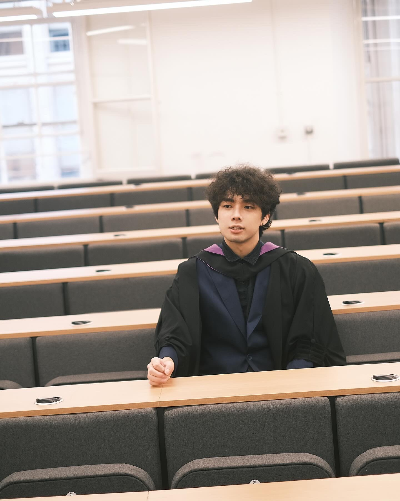

Year 1 PhD student
Teaching Assistant
Dept. of Mathematics
UC Riverside
Schedule a MeetingHi, I am a first-year PhD student in the Mathematics Department at UC Riverside. I obtained my Bachelor's degree in Mathematics from University College London. My research interests lie in Differential Geometry and nonlinear PDE — in particular, the duality of Banach spaces (such as the dual of ba space). If you are also interested in these topics, I am happy to discuss! My PhD study is fully funded by UCR.
Here is my curriculum vitae. During my summer research at UCL, I was supervised by Yan-Long Fang and Rod Halburd; here is my project with Dr. Fang.
I am also a singer; my styles are pop, R&B, and rock. My favourite singers are Michael Jackson, SZA, Laufey, David Tao, and 华晨宇. Here is my TikTok (Chinese version) profile.
My email address is qingdao.chen@email.ucr.edu; chats and collaborations are welcome.
大家好,我是加州大学河滨分校的一年级数学博士生。我在伦敦大学学院完成了数学本科的学习。我的研究兴趣主要集中在微分几何和非线性微分方程,特别是巴拿赫空间的对偶性。如果你对我的研究内容感兴趣,欢迎一起讨论!我的 PhD 学习由 UCR 全额资助。
这是我的个人简介。我在本科期间和导师 Yan-Long Fang 做了一个有关巴拿赫空间的暑研,这是我们的项目。
另外我也是一名业余歌手,擅长的风格是 Pop、R&B 和 Rock。喜欢的歌手是 Michael Jackson、SZA、Laufey、陶喆和华晨宇,这是我的抖音主页。
我的邮箱是qingdao.chen@email.ucr.edu，欢迎任何交流和合作。